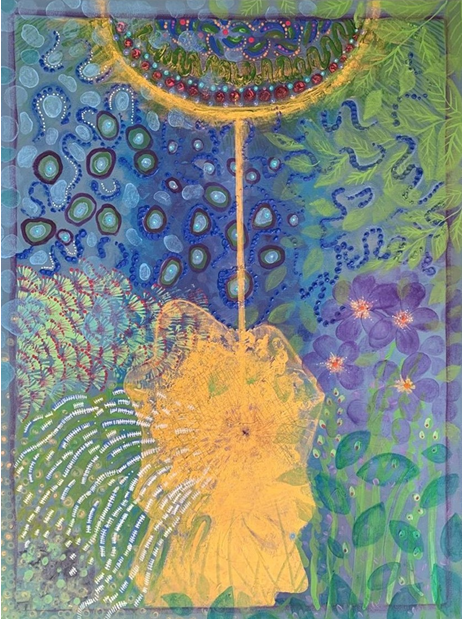
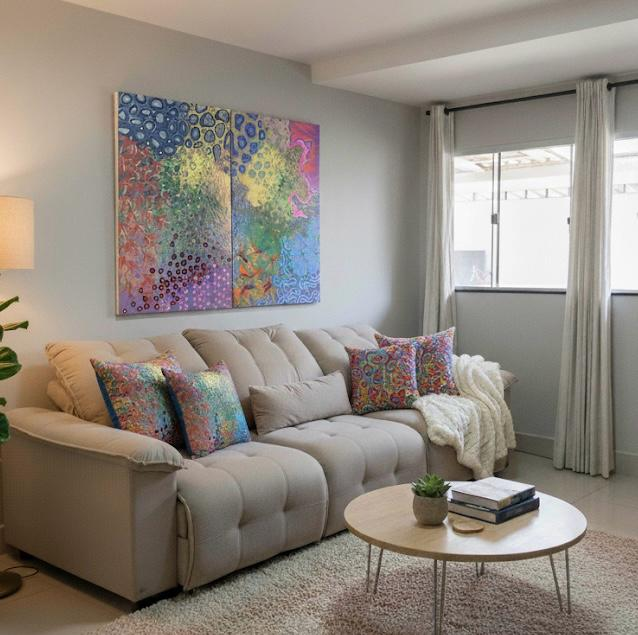
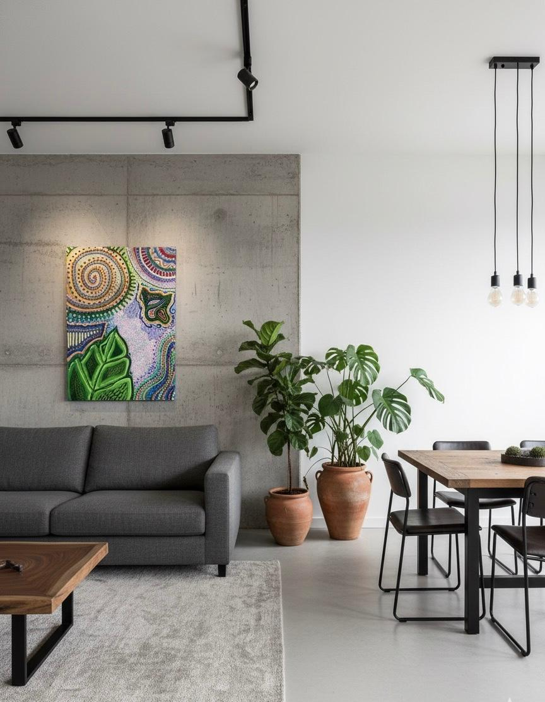
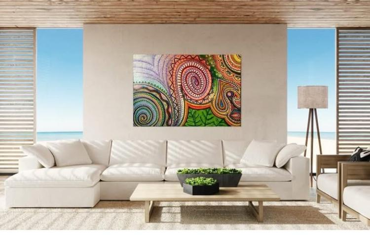

A Arquitetura do Florescer pela Biometria do Sagrado

Sobre minha Arte:
Após mais de duas décadas mergulhada nos mistérios da psique humana e na química cerebral, minha arte surge como a síntese de uma vida dedicada à cura e à compreensão do ser.
Minha pintura não é apenas uma representação da natureza; é um exercício de contemplação ativa da criação de Deus. Através do abstracionismo biomórfico e orgânico, investigo a “biometria do sagrado”, a identidade única e divina impressa em cada forma viva.
Acredito que o verdadeiro florescimento humano reside na nossa capacidade de observar e sentir a presença do Criador em suas obras. Cada pincelada em acrílica é uma ponte entre o conhecimento científico do bem-estar e a transcendência espiritual, projetada para ser uma janela de pausa, conexão e redescoberta da nossa própria arquitetura interior.
Minhas obras
Série ConexãoSérie Terapêutica
Série Conexão
A conexão do ser - Vendido
Os 5 Elementos - 1
A Criação da Flora
Série Terapeutica
Descoberta
Libertando Sentimentos
Reconhecimento
Ambientes Decorados



Biografia
Nascida em Goiânia, desde criança a Arte já se fazia presente e de forma
precoce nas primeiras garatujas. Na infância os desenhos já se destacavam
pela desenvoltura dos traços e sucata ganhava beleza artística. Desenvolveu
o desenho realista de retrato na adolescência, quando começou a pintar em
tela. A partir daí pintou mais de 200 (duzentas) telas. Em 1998, no mesmo
ano em que se casou, afastou-se da profissão de artista plástica para se
tornar arte-educadora. Em 2001 tomou posse em concurso público e, ao se
especializar em Arteterapia, assumiu função na Secretaria de Saúde onde
trabalha atualmente a mais de 20 anos. Nesse período fez várias formações
em práticas integrativas como a fitoenergética, cromoterapia e
especializações em saúde mental. Se tornou especialista em saúde mental,
neuro pedagoga, psicopedagoga, cromoterapeuta e outras formações. A arte
ficou sendo praticada de modo esporádica, fazendo ainda algumas obras. em
2019/2020, criar arte de forma intuitiva surgiu como uma necessidade,
iniciando aí um processo de autoconhecimento, individuação e cura. Deste
processo surge, entre 2022 e 2024, a Série Terapêutica (composta por 6
obras), é o registro visual de uma jornada de três anos dedicados à
introspecção e ao restabelecimento da saúde. Logo após surge a Série
Conexão voltada a expressão de uma busca por conexão com o Divino pela
sua Criação. O estilo abstracionismo biomórfico e orgânico surge da
espontaneidade vinda da intuição onde a artista investiga na natureza a
Biometria do Sagrado, unindo a experiência como terapeuta, para criar telas
que promovem a contemplação nas criações de Deus na arquitetura do
florescer humano.